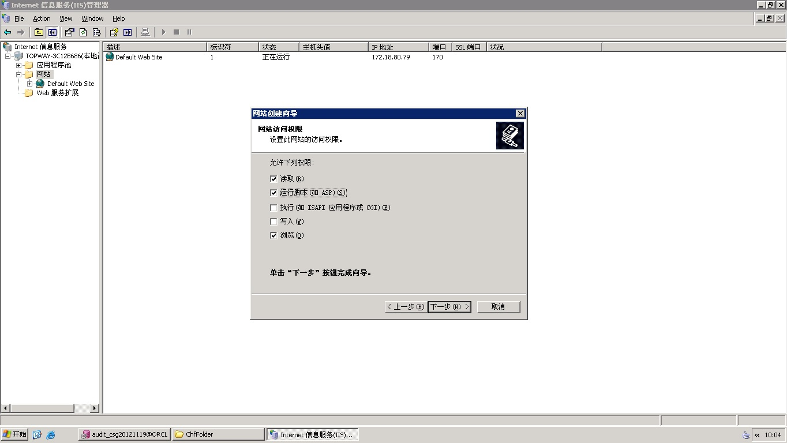
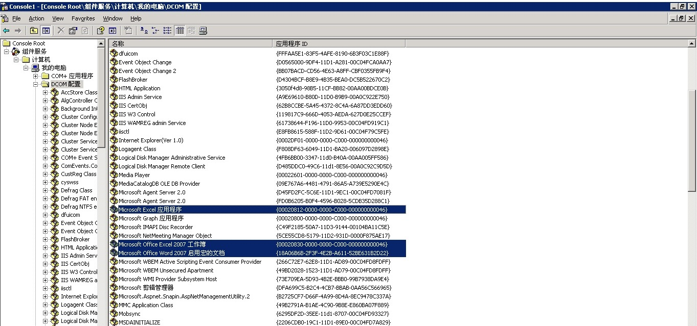

那么就去查看DefaultAppPool应用程序池的标识是否为 网络服务(NetworkService)，若不是，请改成它 

要求服务器环境为windows Server 2003，装有安装版Office 2003而非绿色版，安装好IIS 6.0
打开IIS管理器
右键添加网站
为网站取名，例如：CollectService
绑定端口，例如：12333
将网站主目录指向归档服务程序的物理目录(归档服务程序由开发人员提供)
设定网站访问权限 
左键属性(Properties)查看此网站所用的应用程序池是什么，这里为 DefaultAppPool
那么就去查看DefaultAppPool应用程序池的标识是否为 网络服务(NetworkService)，若不是，请改成它
win + R快捷键 打开运行命令框，敲入 mmc -32，进入控制台
点击 增加/删除管理单元
增加 组件服务
依次双击"组件服务"->"计算机"->"我的电脑"->"DCOM配置" 找到与word相关的组件，右键属性
常规 中可以确认本地路径是以WINWORD.EXE 结尾的
点击 标识 标签,选择 下列用户，填写本机用户及密码
点击 安全(Security) 标签,在 启动和激活权限(Launch and Activation Permissions) 上点击 自定义(Customerize) ,
点击对应的编辑(Edit)按钮,在弹出的 安全性 对话框中点击添加
注意 查找位置 要选择本计算机，填入 NETWORK SERVICE 点击确定增加此用户
赋予 NETWORK SERVICE 本地启动（Local Launch) 等所有权限； 同时在 访问权限(Access Permissions)_ 、配置权限(Configuration Permissions)_ 选项上也要做同样操作，点击 自定义 ,然后点击"编辑",在弹出的"安全性"对话框中也填加一个"NETWORK SERVICE"用户,也赋予所有权限.
刚刚仅把word相关组件配置了权限，另外还有Excel、PPT相关的组件需要设置，请依次找到进行相同的操作
下图标记出Excel和Word组件，在所有的组件中没有找到PPT的，于是在花时间在后面的UUID的组件中，才找到关于PPT的组件，这里需要根据本地路径来寻找， 以POWERPNT.EXE结尾。(根据安装的office和windows不同会有不同情况，需要特别注意一下，万一找不到就需要去UUID的组件中找路径相关的，Word组件是以 WINWORD.EXE结尾，Excel组件是以 EXCEL.EXE结尾，PPT组件是以POWERPNT结尾 ) 
创建归档服务需要的临时目录，可以为任意目录，比如选择 D:\topway\collect 下创建这四个文件夹 document, request, log, temp ，右键 D:\topway\collect 目录 属性 ，选择 安全 标签，点击 编辑 ,在弹出的对话框中添加 NETWORK SERVICE 用户 然后赋予 完全控制 的权限.
修改归档服务程序中的web.config 配置文件： 找到 QueueDir 的value，及 LogFileAppender file 的value，修改如下图：
<appSettings>
<add key="QueueDir" value="D:\topway\collect"/> <!-- 队列目录 -->
<add key="QueueInterval" value="3000"/> <!-- 队列循环间隔时间 -->
<add key="IsSheet" value="1"/> <!-- Excel是否切割Sheet页 -->
<add key="IsImage" value="0"/> <!-- Word, Excel是否图片模式，需要office2007及以上 -->
<add key="JavaServerOn" value="0"/> <!--是否向客户端传回转换日志-->
<add key="JavaServerUrl" value="http://172.18.97.60:8080/Project/ServletUrl"/> <!--客户端传回转换日志请求地址-->
</appSettings>
<log4net>
<!--定义日志输出到文件中-->
<appender name="LogFileAppender" type="log4net.Appender.FileAppender">
<!--定义日志文件存放位置-->
<file value="D:\topway\collect\log\DocumentService.log"/>
<appendToFile value="true"/>
<rollingStyle value="Date"/>
<!-- 省略 -->
</log4net>